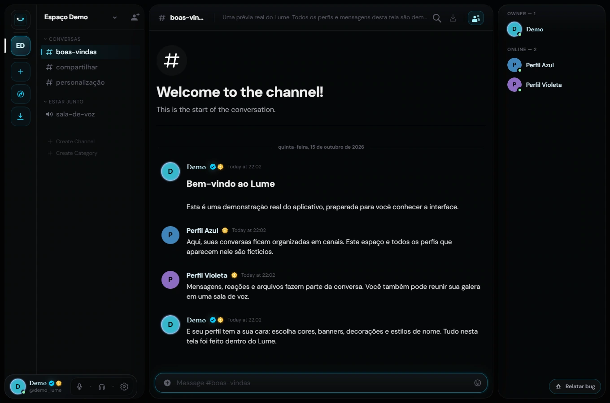

LEVE DURANTE A CHAMADANESTE TESTE
55%
menos RAM.
Mais espaço para o que importa.
Lume274 MB
Discord612 MB
Consumo de memória durante chamada.
A interface que você já conhece, com algo a mais.Voz, mensagens, tela compartilhada e personalização gratuita.
Windows · macOS · Linux · Android
Veja o que muda com o LumeNo nosso teste, o Lume já estava pronto
enquanto o Discord ainda estava abrindo.
Mais espaço para o que importa.
Consumo de memória durante chamada.
Envie arquivos de até 100 MB.
Compartilhe sua tela em até 1080p a 60 FPS.
Seu perfil completo, do seu jeito.
Sem assinatura para personalizar.
GIFs no avatar, banners, molduras, efeitos e estilos de nome. Personalização completa, disponível gratuitamente.
Veja as possibilidades ↗Crie sua conta e abra o Lume no navegador. Conheça a interface e converse antes de baixar nada.
Escolha sua versão ↗Crie comunidades, organize os canais e envie o convite. Todos se reúnem por texto ou voz.
Conheça o Lume ↗Conversas organizadas em canais.
Salas de voz para conversar.
Um perfil que acompanha você.

Canais, mensagens e presença em uma tela real do Lume.
Experimente no navegador ↗Banner e avatar com imagem ou GIF. Molduras, decorações, nome em degradê e efeitos animados. Personalização completa para combinar do seu jeito.
Esse é um perfil real do Lume, com conteúdo de demonstração. Veja os efeitos em movimento e imagine o seu.
Baixe para o seu sistema ou use no navegador.
Abrir o Lume agora ↗Versão beta 24Todas as versões e arquiteturas ↗